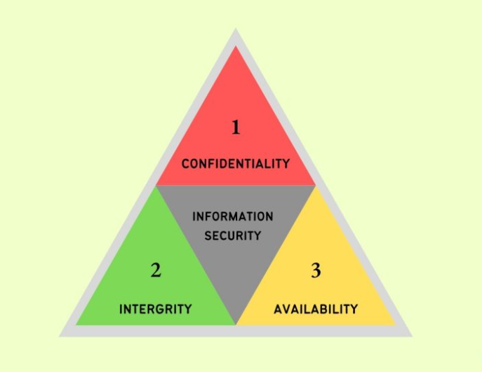
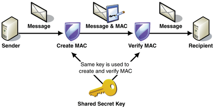
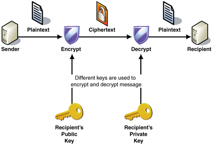
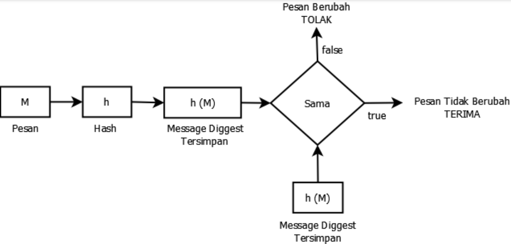

Keamanan data dan informasi sangat diperlukan dalam sebuah perangkat, agar data-data yang diperlukan tidak dicuri atau dihapus oleh oknum-oknum tidak bertanggungjawab. Sebelum melangkah ke pengertia keamanan data dan informasi, kita harus tahu terlebih dahulu apa sih itu data, sistem informasi?
Data adalah kumpulan fakta/keterangan yang dihasilkan dari proses/komunikasi digital maupun fisik, belum memberikan arti, makna, maupun manfaat.
Sistem adalah suatu kesatuan yang teridir atas komponen atau elemen yang dihubungkan bersama untuk memudahkan aliran informasi, materi, atau energi untuk mencapai tujuan
Informasi adalah data yang diolah sehingga memberikan arti, nilai, fungsi dan manfaat
Sistem Informasi adalah sistem yang digunakan di dalam proses pengelolaan data dan pengolahan data menjadi informasi
Lalu, setelah kita mengetahui pengertian dari data dan informasi, selanjutnya apa sih itu keamanan data dan informasi? apa tujuannya? bagaimana cara mewujudkannya dengan kriptografi? Simak informasinya pada artikel di bawah ini ya!
APA ITU KEAMANAN DATA
Keamanan data adalah dasar dari sebuah keamanan informasi dan keamanan sistem informasi. Data yang tidak aman, menyebabkan informasi yang dihasilkan juga akan tidak aman, seperti diragukan kebenrannya, keabsahannya, keakuratan dan lain sebagainya. Hal ini juga otomatis akan meragukan keamanan sistem informasi yang bersangkutan. Selain itu, ini tentu akan berdampak terhadap citra institusi atau organisasi atau pribadi bersangkutan, misalnya dalam hal kepercayaan, bisnis, penilaian, dan lain-lain.
Keamanan data pada dasarnya adalah sebuah atau serangkaian upaya untuk melakukan perlindungan terhadap data (pribadi/organisasi) dari berbagai bentuk kegiatan/akses ilegal dan penyalahgunaan, pada berbagai jenis/format/tipe data apapun.
APA ITU KEAMANAN INFORMASI?
Keamanan informasi adalah dasar dari sebuah keamanan sistem informasi yang tentunya akan terwujud apabila sebelumnya telah diwujudkan keamanan datanya. Informasi yang aman berasal adri data yang aman dan terpercaya, demikian pula sebaliknya.
Keamanan Informasi merupakan sebuah atau serangkaian upaya untuk melakukan perlindungan terhadap informasi yang dimiliki baik oleh pribadi maupun organisasi dari berbagai bentuk kegiatan/akses ilegal dan penyalahgunaan. Tujuan keamanan informasi sama seperti halna keamanan data dan keamanan sistem informasi.
TUJUAN DAN NILAI PENTING KEAMANAN DATA DAN INFORMASI
Seperti yang diketahui, kasus pencurian data sudah marak terjadi dan menyebabkan banyak korban. Bahkan, berdasarkan data Patroli Siber dalam lima tahun terakhir terjadi kenaikan laporan kasus pencurian data setiap tahunnya.
Terdapat tiga tujuan dan nilai penting pada keamanan data dan informasi yang dikenal dengan CIA Triad. CIA Triad adalah model keamanan yang dikembangkan untuk membantu manusia memikirkan berbagai bagian keamanan teknologi informasi. Adapun bagian-bagiannya adalah sebagai berikut:
 Gambar 2 Ilustrasi Model CIA Triad
Kerahasiaan (Confidentiality)
Confidentiality atau kerahasiaan dalam hal ini berarti data dan informasi harus terjamin keharasiaannya.
Ketersediaan (Availability)
Availability atau ketersediaan dalam hal ini berarti akses data dan informasi hanya kepada pengguna yang sah dan hanya oleh pengguna yang berhal atau memiliki privillege yang dapat mengaksesnya.
Integritas (Integrity)
Integrity atau integritas dalam hal ini berarti kekonsistenan data dan informasi sesuai dengan aslinya dan tidak diubah oleh pihak yang tidak berhak.
TANTANGAN KEAMANAN DATA DAN INFORMASI
Dalam mewujudkan keamanan data dan informasi, tentunya terdapat hambatan atau tantangan yang harus dihadai, antara lain:
Semakin banyaknya perangkat yang terhubung ke jaringan komputer (terutama internet)
Tingkat pemahaman kewaspadaan keamanan (Security Awareness) pada pengguna yang berbeda-beda - Ada yg sangat paham, ada yg tidak paham sama sekali
Regulasi dan birokrasi institusi → ada yang mendukung. ada yang tidak mendukung
Kurangnya audit kemanan (jaringan, server, sistem, dll) pada organisasi atau institusi
CRYPTOGRAPHY
Untuk mewujudkan keamanan data dan informasi, terdapat salah satu upaya yang dapat dilakukan guna mencapai tujuan tersebut, yaitu melalui Cryptography atau kriptografi.
Kriptografi adalah teknik untuk melindungi daa dan informasi di dalam tunnel (saluran/media) komunikasi, sehingga memungkinkan hanya pengirim dan penerima saja yang dapat melihat data dan informasi yang dipertukarkan. Contoh penerapan Kriptografi terdapa pada aplikasi dan layanan pesan seperti Whatsapp dan Telegram. Kriptografi terdiri dari 3 hal, yaitu:
ENKRIPSI
Enkripsi adalah sebuah cara untuk mengubah plain text (data asal/awal yang terbaca dan terpahami oleh manusia) menjadi chiper text (telah terenkripsi, tidak dapat dipahami oleh manusia).
DEKRIPSI
Dekripsi adalah kebalikan dari enkripsi, yaitu sebuah cara untuk mengubah chiper text (telah terenkripsi, tidak dapat dipahami oleh manusia) menjadi plain text (data asal/awal yang terbaca dan terpahami oleh manusia).
KEY (KUNCI)
Key adalah parameter dan algoritma untuk melakukan proses enkripsi dan dekripsi.
FUNGSI DAN PERAN CRYPTOGRAPHY DALAM KEAMANAN DATA DAN INFORMASI
Kriptogtafi memiliki fungsi dan peran yang penting dalam keamaan data dan informasi, yaitu:
Membantu menyembunyikan data-data penting dari pihak yang tidak berkepentingan, karena kriptografi melindungi dan menjaga kerahasiaan data-data penting (personal/organisasi) melalui enkripsi, dekripsi dan kunci.
Melakukan Enkripsi dan Dekripsi untuk mendukung keamanan data dan informasi.
Kriptografi meningkatakn privasi pengguna (personal/organisasi) melalui adanya dukungan berikut:
KERAHASIAAN (CONFIDENTIALITY)
Menjamin data hanya bisa diakses oleh pihak tertentu saja (yang berhak).
OTENTIKASI (AUTHENTICATION)
Informasi yang diperoleh harus diidentifikasi terlebih dahulu untuk memastikan keaslian dan kebenarannya.
INTEGRITAS (INTERITY)
Menjamin data, informasi, pesan yang dikirim akan sampai dengan aman tanpa adanya perubahan, perusakan, penambahan, yang menghilangkan keaslian data/informasi/pesan tersebut.
ANTI PENYANGKALAN (NON REPUDIATION)
Mencegah penirim dan penerima menyangkal apabila bukan mereka yang mengirim/menerima data/informasi/pesan tersebut.
JENIS-JENIS CRYPTOGRAPHY
SYMMETRIC KEY

Pengirim dan penerima informasi hanya menggunakan satu kunci untuk melakukan enkripsi dan dekripsi informasi.
Algoritma yang digunakan adalah Advanced Encryption System (AES)
PUBLIC/ASYMMETRIC KEY

Memanfaatkan dua kunci yang saling berkaitan sebagai public key (kunci publik) dan private key (kunci pribadi)
Kedua kunci dipasangkan sehingga kode enkripsi dan data tetap terjaga kerahasiaannya.
Menggunakan algoritma Registered Securities Analyst (RSA).
HASH FUNCTION

Menggunakan persamaan matematika, sehingga tidak memerlukan kunci (key) karena pengiriman data satu arah.
Menggunakan konsep dimana informasi dirangku dan dikirim berupa penjelasan dari hasil rangkuman.
Algoritma pada Hash akan mengambil nilai numerik sebagai input dan menghasilkan pesan yang akan diringkas oleh Hash.
Referensi
Pemaparan materi pertemuan kedua mengenai Keamanan Informasi dan Kriptografi dalam mata kuliah Keamanan Informasi oleh
Rhodes-Ousley, Mark,“Information Security: The Complete Reference“, McGraw Hill, New York, 2013
Kurniawan, Yusuf, “Kriptografi Keamanan Internet dan Jaringan Komunikasi”, Informatika Bandung, Bandung, 2004
Menezes, Alfred J., “Handbook of Applied Cryptography”, CRC Press, New York,1997